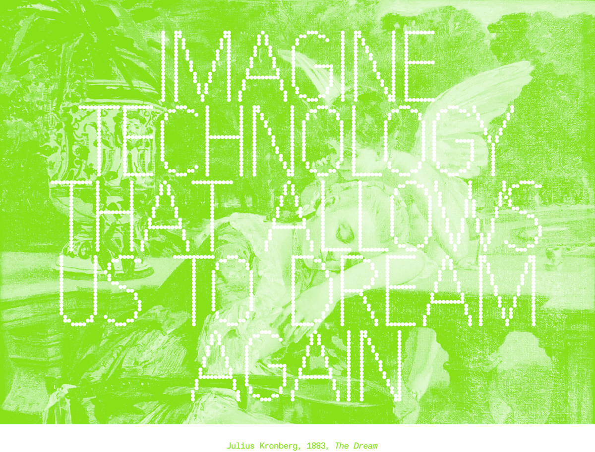
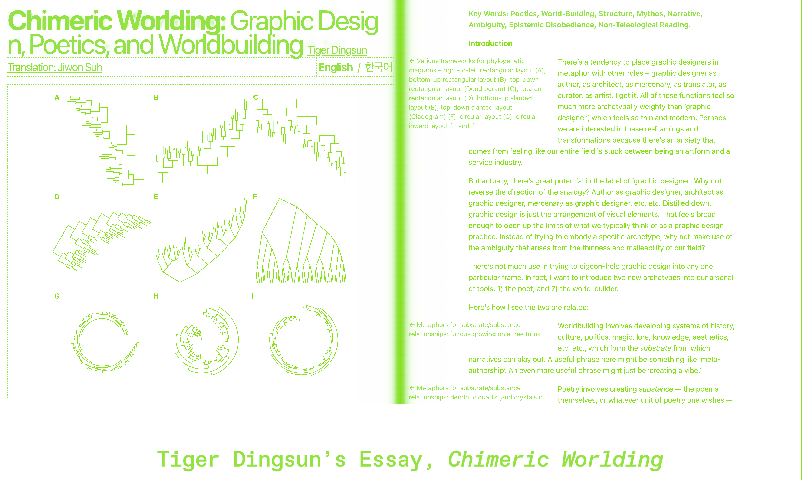
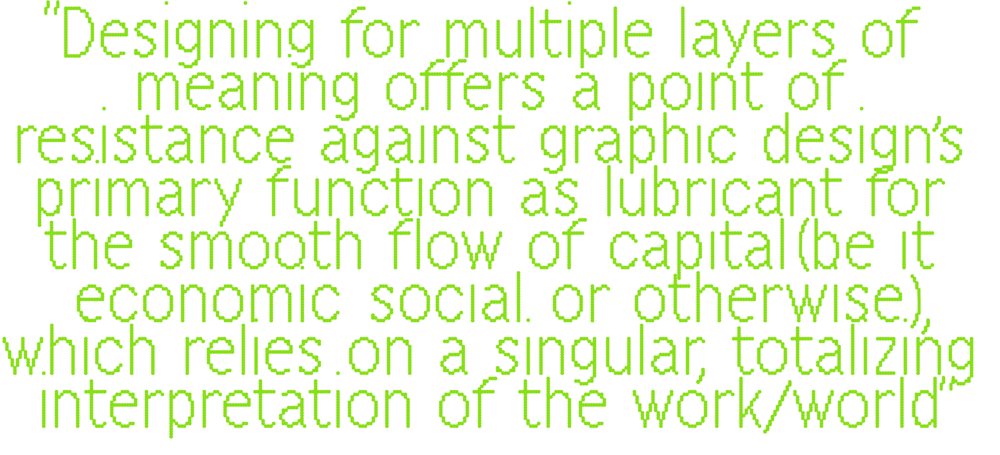

I WANT YOU TO DIG ◌ is a publication, website, and workshop that aims to frame creative cognition in the context of our technological consciousness. It analyzes how the evolution of our technological atmosphere has influenced our methods of research, creative outcomes, and capacity for connection. The title of this project works to reconnect technology with its material, elemental roots. To reconnect it with its tangibility is to reimagine its capacity as a tool, challenging the intentional obfuscation of its functions by the programmer class. Limiting the users understanding of their technology, through purposefully opaque platforms and systems that move too fast for our comprehension, serve the purpose of keeping the user subjugated and reliant on the knowledge of technocrats. By reframing our digital technology as tools, and connecting the act of researching on them to the physical act of digging, I ask the audience to engage in slow, inconvenient, and opportunity-rich research with the goal of producing creative work that is dense, personal, and invites community engagement.
This project adopts much of the vernacular and visual style of these artists, especially in reference to terms such as handmade webs, poetic computing (& poetic design), and slow technology. These terms have been used to define the styles and ideas formulated during this early creative-web period. Handmade webs, as discussed by artist and writer J.R. Carpenter in her essay A Handmade Web, are websites coded and maintained by individuals, rather than large platforms, commercial sites, or sites created through templates. Handmade webs are connected to handmade print, such as DIY zines, emphasizing the labor that goes into the design, creation, and maintenance of webpages and print projects. Poetic computation, and poetic design, emphasize the insertion of poetic elements into website and design, namely through challenging notions of clarity, efficiency, and functionality. Poeticism introduces layers of meaning that connect the audience to the maker by encouraging a variety of personal interpretations. Slow technology runs through both of these concepts. It encourages a slow, deliberate, and purposeful relationship with technology, one that champions reflection over convenience.

This website, proudly hand-built, aims to insert this project into the larger history of new media arts, functioning as a method of engaging in the practices outlined by these radical, early-internet pioneers. It hopes to engage with the infinite connective capacities of the internet. Drawing on the themes of the original Community Memory project, I hope we can revive the computer as a tool for connection. I draw a parallel between the self-made publication and the self-made webpage, just as you can pin a zine to your local community bulletin, you can disseminate your webpage through the bulletin of the internet. I intended the publication and workshop elements of this project to ground it in physical reality, recentering the computer as a tool for connection and research, an opportunity to enhance, but not shape, our creative practices.
Jorge Luis Borges' short story, the Library of Babel, introduces us to a universal library containing books composed of every possible combination of a 25-character alphabet. On these seemingly infinite shelves all knowledge is contained—every truth and every lie, all records of the past and future, the exact origins of the library itself—amongst a sea of gibberish. The Librarians within descend into religious fanaticism in their search to find meaning through the nonsense.

For those who appropriate it, myth serves the purpose of laundering ideas. Roland Barthes’ essay, Myth as Depoliticized Speech, reveals how myth dresses objects—manufactured, mechanical, contingent—in the appearance of something natural, eternal, and predestined. Through this framing, all forms of technological expansion gain their eternal justifications, they become natural inevitabilities. The techno-optimist is simply ushering in a future that was always going to occur, and thus any opposition to the future they imagine is as futile and criminal as punching a mountain. The mythic, magical quality of these devices is not just programmed through speech, but through the quality of the objects themselves.

Designers make the interfaces that conceal the code of the programmer, maintaining the mystical quality of these devices by disguising their human origins. These interfaces hide the assumptions, biases, and beliefs of the programmer. This results in the user, who approaches the computer as an infinite well of knowledge, with cognitive abilities far more vast and objective than their own, passively accepting the bias encoded into the computer by its fallible human creators. The timeline of interface design styles, from skeuomorphism, to flat design, and finally to our current neumorphism, marks the evolution of the purposeful mystification of the computer as a tool. Skeuomorphism spoke the language of the physical, with the desktop metaphor being one of the first examples—the computer had “folders”, a “trash can”, a “note pad”—it was meant to serve as a tool to replace your everyday organizational objects. The computer was not to be understood as a computer, a separate tool, but as a magical, highly efficient form of previous objects. The transition into flat design saw the adaptation of mid-20th century Swiss design to the digital interface. It is during this period that interfaces become more opaque to the user, with the simplicity of the interfaces further obscuring the actual functionalities of the computer as such. Finally, entering into the age of neumorphism, we see a simulation of the original, skeuomorphic simulation. Neumorphism adopts the shadows and protrusions of skeuomorphism but abandons any of the texture, pattern, or emulations of life. It smooths the features of the world through shine and gradients, it becomes a mystical object through its perfection of nature. The computer has ingested the “real world” and spit it back up, vectorized.

Design, in its simplest form, is often framed as creative problem solving. This utilitarian perspective was championed by the European designers of the 20th century, who placed simplicity, legibility, and order above all else. Moving into a century where our lives are increasingly defined by reliance on machinery, what if the issue that designers are faced with is a lack of humanity in our lives? What if we move beyond functionalism, creating work that inserts effortful thinking into a culture that attempts to smooth over every challenge?


Dreamful technological relationships allow us to access poetic design. They ask us to move beyond the algorithms that generate cycles of microtrends, killing the learning process inherent to the struggle of translating an idea to a finished product. This is a movement towards the personal, towards connections that can only be made by engaging, painfully, laboriously, with friction. Dreamful technology invites us to imagine futures centered on the effortful relationship between creation and critical thought. A future where technology serves as a tool to build work that builds us back.
On Saturday, November 22nd, 2025 at 11:00 AM, I gathered 12 of my peers to engage in a community design workshop. This workshop was an exercise in poetic design experimentation, an interrogation of the internet as a design tool, and an exploration of community-based learning opportunities. It functioned as the culmination of my research by introducing and exploring these concepts within my immediate community.

The button below will bring you to a randomized Wikipedia article. Gather your friends and use it in a workshop setting, or simply explore on your own.
This library compiles the most influential pieces to the formation of this project, including links to all digital sources. I hope you can explore further for yourself, and let these be potential starting places for digging.
| Online | |
|---|---|
| JR Carpenter | A Handmade Web |
| JR Carpenter | A Handmade Web |
| JR Carpenter | A Handmade Web |